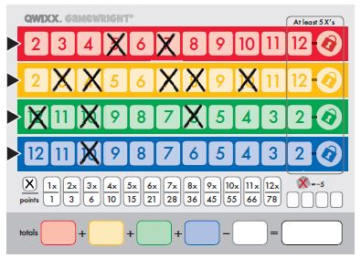
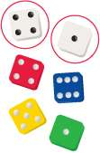
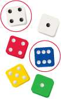
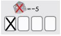
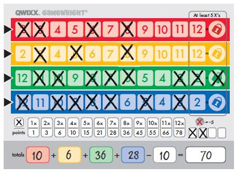

A fun luck and strategy dice game for 2 to 4 players
The current player is: Player 1
select the dice you wish to use and then click on the desired number box
each player has the opportunity to score an additional score box by using the main players white dice, to do so simply click on the players card, select the white dice, and select the desied number box. You cna only do this once per turn
Score the most points by crossing out as many numbers in the four color-rows as possible while avoiding penalty points.
Each player takes a score sheet and something to write with.
Before playing it's important to understand the one basic rule of Qwixx, which is that numbers must be crossed out from left to right in each of the four color-rows.
You do not have to begin with the number farthest to the left, but if you skip any numbers, they cannot be crossed out afterward.
Example: In the red row first the 5 and then the 7 were crossed out. Therefore, the red 2, 3, 4 and 6 may not be crossed out later in the game. In the yellow row only the 11 and the 12 may still be crossed out. In the green row you can only cross out numbers to the right of the 6. In the blue row you can only cross out right of the 10.
Tip: Put a small horizontal line through the numbers that you skipped, so that you don't cross them out later by accident.
The first player to roll a 6 takes on the role of "active player". The active player rolls all six dice. The following two actions are now carried out in order, always one after the other:
1. The active player adds up the two white dice and announces out loud, the resulting sum. All players may then (but are not required to) cross out the number that the active player announced in any (but only one) of the color-rows. Example: Chris is the active player. The two white dice show a 4 and a 1. Chris announces, "five". Tony crosses out the yellow 5 on his score sheet. Caroline crosses out the red 5. Annie and Nora choose not to cross out a number.
2. The active player (but not the others) may then (but is not required to) add one of the white dice together with any one of the colored dice and cross out the number corresponding to this sum in the color-row corresponding to the color of the chosen die. Example: Chris adds together the white 4 with the blue 6 and crosses out the 10 in the blue color-row.
If, after the two actions, the active player doesn't cross out at least one number, he must cross out one of the penalty boxes. Each penalty box is worth -5 points at the end of the game. (The non-active players do not take a penalty if they choose not to cross out a number).
Once all players are ready, the player to the left becomes the new active player and re-rolls all six dice. Then the two actions described on the left are carried out again, one after the other.
If you wish to cross out the number at the extreme right end of a color-row (red 12, yellow 12, green 2, blue 2) you must have first crossed out at least five numbers in that row.
If you cross out the number on the extreme right, then also cross off the lock symbol directly next to it. This indicates that the color-row is now locked for all players and numbers of this color cannot be crossed out in future rounds.
The die of the corresponding color is immediately removed from the game.
Example: Alison crosses out the green 2 and after it, the lock symbol. The green die is removed from the game.
Notes:
If a row is locked during the first action, it is possible that other players may, at the same time, also cross out the number on the extreme right and lock the same color-row. These players must also have previously crossed out at least five numbers in that row.
The cross on the lock counts toward the total number of crosses marked in that color-row.
The game ends immediately as soon as either someone has marked a cross in his fourth penalty box or as soon as two dice have been removed from the game (two color-rows have been locked).
It may occur (during the first action) that a third row is locked simultaneously with the second row.
Beneath the four color-rows is a table indicating how many points are awarded for how many crosses within each row (including any locks marked with a cross).
Each crossed out penalty box scores five minus-points. Enter your points for the four color-rows and the minus-points for any penalties in the appropriate fields at the bottom of the scoresheet
The player with the highest total score is the winner.
Example:Alison has 4 crosses in red, which gives her 10 points; in yellow, she has 3 (=6 points); in green 8 (=36 points); and in blue 7 (= 28 points). For her two penalties she must subtract 10 points. This means that Alison's total score is 70 points.